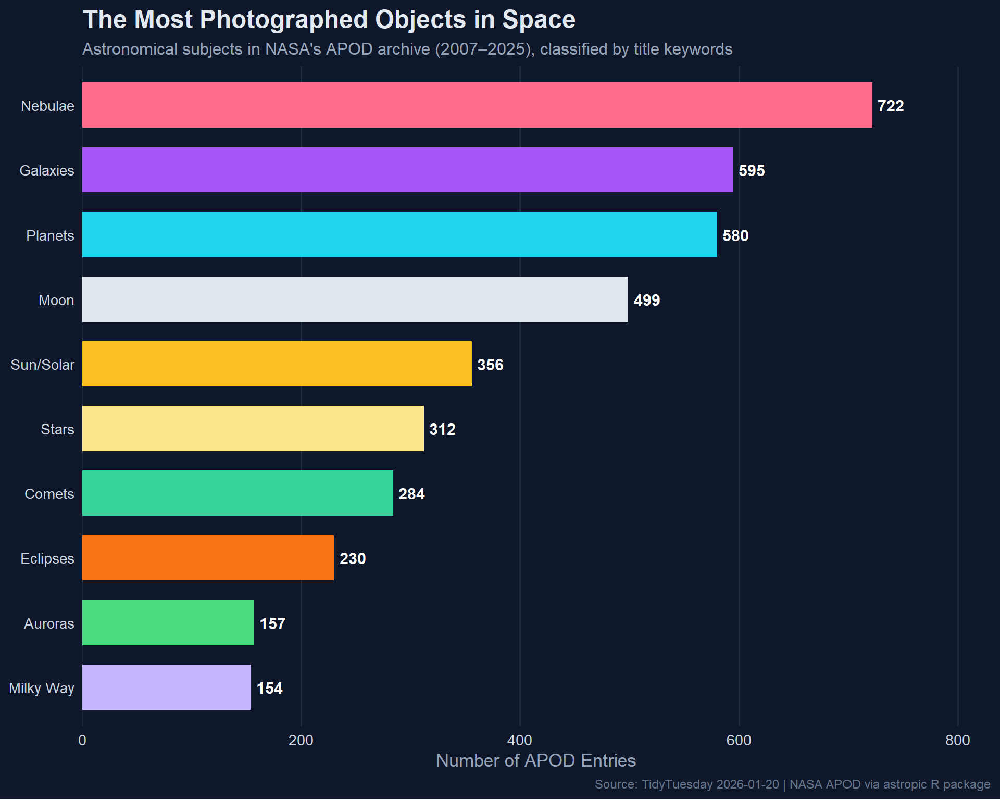

Mining NASA’s APOD archive (2007-2025) — what astronomical subjects capture the most attention, and how has the archive evolved over nearly two decades?
The Astronomy Picture of the Day (APOD) archive contains daily astronomy-related images with a scientific explanation, spanning 2007–2025. The data originates from NASA’s popular APOD website and has been curated into the astropic R package.
What types of objects are most common in the archive?
Are any images posted more than once?
Loading necessary packages
My handy booster pack that allows me to install (if needed) and load my usual and favorite packages, as well as some helpful functions.
raw <- tidytuesdayR::tt_load('2026-01-20')apod <- raw$apod
Exploratory Data Analysis
The my_skim() function is a modified version of the skimr::skim() function that returns the number of missing data points (cells as NA) as well as the inverse (e.g.: number of rows that are notNA), the count, minimum, 25%, median, 75%, max, mean, geometric mean, and standard deviation. It also generates a little ASCII histogram. Neat!
APOD Archive
I’ll drop the URL columns and explanation text for the initial skim — they’re useful later but not for profiling.
# A tibble: 15 × 2
title n
<chr> <int>
1 M31: The Andromeda Galaxy 10
2 The Horsehead Nebula 10
3 M13: The Great Globular Cluster in Hercules 9
4 NGC 4565: Galaxy on Edge 9
5 NGC 602 and Beyond 8
6 The Medusa Nebula 8
7 The Seagull Nebula 8
8 A Beautiful Trifid 7
9 Galaxies in the River 7
10 Halo of the Cat's Eye 7
11 Lynds Dark Nebula 1251 7
12 M1: The Crab Nebula from Hubble 7
13 M27: The Dumbbell Nebula 7
14 M45: The Pleiades Star Cluster 7
15 Millions of Stars in Omega Centauri 7
Most Common Subjects via Title Keywords
To answer “what types of objects are most common,” we can tokenize the titles and look for astronomical keywords.
The hero plot shows the most common astronomical subjects across the archive, styled with a deep-space aesthetic.
# Space-themed palettespace_cols <-c("Nebulae"="#FF6B8A","Galaxies"="#A855F7","Moon"="#E2E8F0","Sun/Solar"="#FBBF24","Eclipses"="#F97316","Planets"="#22D3EE","Comets"="#34D399","Auroras"="#4ADE80","Milky Way"="#C4B5FD","Meteors"="#FB923C","Stars"="#FDE68A","Supernovae"="#F43F5E","Star Clusters"="#818CF8")# Prepare data — top categories by total counttop_categories <- apod_tagged %>%filter(category !="Other") %>%count(category, sort =TRUE) %>%head(10)ggplot(top_categories, aes(x =reorder(category, n), y = n, fill = category)) +geom_col(width =0.7, show.legend =FALSE) +geom_text(aes(label = n),hjust =-0.2,color ="white",fontface ="bold",size =4 ) +scale_fill_manual(values = space_cols) +scale_y_continuous(expand =expansion(mult =c(0, 0.15))) +coord_flip() +labs(title ="The Most Photographed Objects in Space",subtitle ="Astronomical subjects in NASA's APOD archive (2007\u20132025), classified by title keywords",x =NULL,y ="Number of APOD Entries",caption ="Source: TidyTuesday 2026-01-20 | NASA APOD via astropic R package" ) +theme_minimal(base_size =13) +theme(plot.background =element_rect(fill ="#0F172A", color =NA),panel.background =element_rect(fill ="#0F172A", color =NA),text =element_text(color ="white"),plot.title =element_text(face ="bold", size =18, color ="#E2E8F0"),plot.subtitle =element_text(size =12, color ="#94A3B8"),plot.caption =element_text(size =9, color ="#64748B"),axis.text =element_text(color ="#CBD5E1"),axis.title =element_text(color ="#94A3B8"),panel.grid.major.y =element_blank(),panel.grid.major.x =element_line(color ="#1E293B"),panel.grid.minor =element_blank() )

Final thoughts and takeaways
NASA’s Astronomy Picture of the Day is one of the longest-running and most beloved science communication projects on the internet. This archive spanning nearly two decades reveals what captures our collective astronomical imagination — and nebulae consistently come out on top, which makes sense given their visual drama and the stunning images that space telescopes produce.
Galaxies and our own Moon round out the top three, reflecting both the accessibility of lunar photography for amateur astronomers and the deep fascination with the large-scale structure of the universe. The presence of auroras and eclipses in the rankings highlights how APOD balances deep-sky objects with phenomena visible from Earth, keeping the archive grounded (literally) for a general audience.
The duplicate analysis reveals that some iconic images do get revisited — either because the same event is captured from different perspectives or because a particularly striking image merits a re-share. This isn’t noise; it’s editorial curation at work.
Tip
The title-keyword approach to classification is deliberately simple. A more sophisticated analysis could use NLP on the explanation text to capture objects mentioned in the description but not the title. The explanations are rich with scientific context that the titles alone don’t capture.